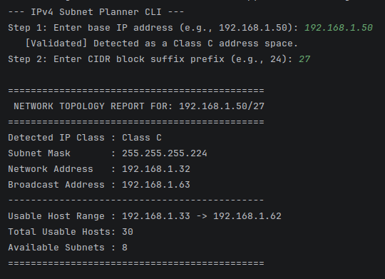
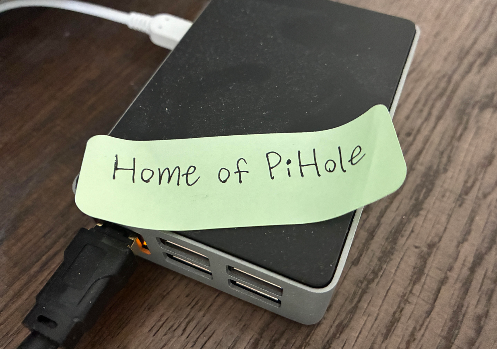

Projects

IPv4 Subnetting CLI
Built a command-line utility in Python that calculates network addresses, broadcast addresses, subnet masks, and usable host ranges from scratch using bitwise operations.
See more
SOHO Privacy Gateway
Rebuilt my home network's routing and DNS from scratch: static IPs, a Pi-hole DNS sinkhole on a Raspberry Pi, and a VPN gateway for secure remote access.
See more